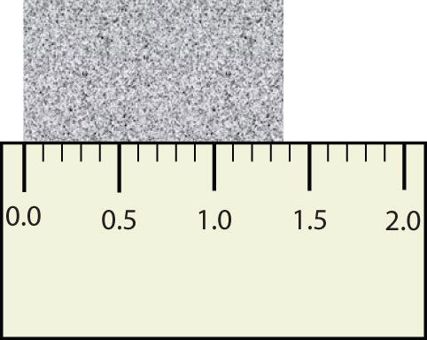

Scientists have established certain conventions for communicating the degree of precision of a measurement. Imagine, for example, that you are using a meterstick to measure the width of a table. The centimeters (cm) are marked off, telling you how many centimeters wide the table is. Many metersticks also have millimeters (mm) marked off, so we can measure the table to the nearest millimeter. But most metersticks do not have any finer measurements indicated, so you cannot report the table’s width any more exactly than to the nearest millimeter. All you can do is estimate the next decimal place in the measurement (Figure 1.7 "Measuring an Object to the Correct Number of Digits").
Figure 1.7 Measuring an Object to the Correct Number of Digits
How many digits should be reported for the length of this object?
The concept of significant figures takes this limitation into account. The significant figuresAll the digits of a measured quantity known with certainty and the first uncertain, or estimated, digit. of a measured quantity are defined as all the digits known with certainty and the first uncertain, or estimated, digit. It makes no sense to report any digits after the first uncertain one, so it is the last digit reported in a measurement. Zeros are used when needed to place the significant figures in their correct positions. Thus, zeros may not be significant figures.
“Sig figs” is a common abbreviation for significant figures.
For example, if a table is measured and reported as being 1,357 mm wide, the number 1,357 has four significant figures. The 1 (thousands), the 3 (hundreds), and the 5 (tens) are certain; the 7 (units) is assumed to have been estimated. It would make no sense to report such a measurement as 1,357.0 or 1,357.00 because that would suggest the measuring instrument was able to determine the width to the nearest tenth or hundredth of a millimeter, when in fact it shows only tens of millimeters and the units have to be estimated.
On the other hand, if a measurement is reported as 150 mm, the 1 (hundreds) and the 5 (tens) are known to be significant, but how do we know whether the zero is or is not significant? The measuring instrument could have had marks indicating every 10 mm or marks indicating every 1 mm. Is the zero an estimate, or is the 5 an estimate and the zero a placeholder?
The rules for deciding which digits in a measurement are significant are as follows:
How many significant digits does each number have?
Solution
How many significant digits does each number have?
2.1828
0.005505
55,050
5
500
It is important to be aware of significant figures when you are mathematically manipulating numbers. For example, dividing 125 by 307 on a calculator gives 0.4071661238… to an infinite number of digits. But do the digits in this answer have any practical meaning, especially when you are starting with numbers that have only three significant figures each? When performing mathematical operations, there are two rules for limiting the number of significant figures in an answer—one rule is for addition and subtraction, and one rule is for multiplication and division.
For addition or subtraction, the rule is to stack all the numbers with their decimal points aligned and then limit the answer’s significant figures to the rightmost column for which all the numbers have significant figures. Consider the following:
The arrow points to the rightmost column in which all the numbers have significant figures—in this case, the tenths place. Therefore, we will limit our final answer to the tenths place. Is our final answer therefore 1,459.0? No, because when we drop digits from the end of a number, we also have to roundThe process of assessing the final significant figure of a quantity to determine if it should be kept or moved higher. the number. Notice that the second dropped digit, in the hundredths place, is 8. This suggests that the answer is actually closer to 1,459.1 than it is to 1,459.0, so we need to round up to 1,459.1. The rules in rounding are simple: If the first dropped digit is 5 or higher, round up. If the first dropped digit is lower than 5, do not round up.
For multiplication or division, the rule is to count the number of significant figures in each number being multiplied or divided and then limit the significant figures in the answer to the lowest count. An example is as follows:
The final answer, limited to four significant figures, is 4,094. The first digit dropped is 1, so we do not round up.
Scientific notation provides a way of communicating significant figures without ambiguity. You simply include all the significant figures in the leading number. For example, the number 450 has two significant figures and would be written in scientific notation as 4.5 × 102, whereas 450.0 has four significant figures and would be written as 4.500 × 102. In scientific notation, all significant figures are listed explicitly.
Write the answer for each expression using scientific notation with the appropriate number of significant figures.
Solution
Write the answer for each expression using scientific notation with the appropriate number of significant figures.
217 ÷ 903
13.77 + 908.226 + 515
255.0 − 99
0.00666 × 321
Remember that calculators do not understand significant figures. You are the one who must apply the rules of significant figures to a result from your calculator.
Explain why the concept of significant figures is important in numerical calculations.
State the rules for determining the significant figures in a measurement.
When do you round a number up, and when do you not round a number up?
Significant figures represent all the known digits of a measurement plus the first estimated one.
All nonzero digits are significant; zeros between nonzero digits are significant; zeros at the end of a nondecimal number or the beginning of a decimal number are not significant; zeros at the end of a decimal number are significant.
Round up only if the first digit dropped is 5 or higher.
Define significant figures. Why are they important?
Define the different types of zeros found in a number and explain whether or not they are significant.
How many significant figures are in each number?
How many significant figures are in each number?
Round each number to three significant figures.
Round each number to four significant figures.
Perform each operation and express the answer to the correct number of significant figures.
Perform each operation and express the answer to the correct number of significant figures.
Perform each operation and express the answer to the correct number of significant figures.
Perform each operation and express the answer to the correct number of significant figures.
Use your calculator to solve each equation. Express each answer in proper scientific notation and with the proper number of significant figures. If you do not get the correct answers, you may not be entering scientific notation into your calculator properly, so ask your instructor for assistance.
Use your calculator to solve each equation. Express each answer in proper scientific notation and with the proper number of significant figures. If you do not get the correct answers, you may not be entering scientific notation into your calculator properly, so ask your instructor for assistance.
Significant figures represent all the known digits plus the first estimated digit of a measurement; they are the only values worth reporting in a measurement.